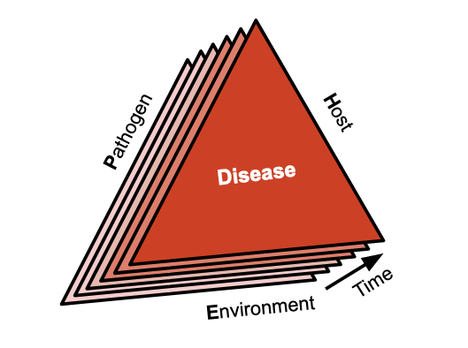

1 คำนำ
1.1 โรคพืชคืออะไร
โรคพืช คือ การทำงานผิดปกติของเซลล์และเนื้อเยื่อที่อาศัยซึ่งเป็นผลมาจากการระคายเคือง อย่างต่อเนืื่อง โดยสิ่งมีชีวิต(รวมถึงสัตว์ จุลินทรีย์ที่มองเห็นไม่เห็นด้วยตาเปล่่า)ก่อโรคหรือปัจจัยด้านสิ่งแวดล้อม และนำไปสู่การเกิดอาการผิดปกติเหล่านั้น (Agrios 2005a)
โรคเป็นผลมาจากสามองค์ประกอบร่วมกัน ที่เรียกกันว่า “สามเหลี่ยมโรคพืช” (disease triagle): พืชอาศัยที่อ่อนแอ (susceptible host) เชื้อโรคที่มีความรุนแรง(virulant pathogen) และสภาพแวดล้อมที่เอื้ออำนวย (favorable environment) - สามเหลี่ยมโรคที่มีชื่อเสียง เมื่อประชากรเชื้อโรคเกิดขึ้นและทำให้เกิด โรค เมื่อประชากรเชื้อโรคก่อตัวและทำให้เกิด โรค ในประชากรโฮสต์(ในที่นี้คือพืช)ปรากฏการณ์นี้เรียกว่า โรคระบาด หรือโรคในประชากร หรือจะใหนิยาม ของโรคระบาด คำที่ครอบคลุมคือ การเปลี่ยนแปลงความรุนแรงของโรค (disease intensity)ในประชากรโฮสต์ (host population)ในเชิงเวลาและระยะทาง (over time and space) (Madden et al. 2007)
หลักการสามเหลี่ยมโรคพืช ถูกหยิบยกมาใช้อธิบายและเป็นหลักการพื้นฐาน และนำมาขยายความกว้างออกไปมากขึ้น และผสมผสานองค์ประกอบอื่น ๆ เพิ่มเติม เช่น มนุษย์ (human activity )และ เวลา (time) เพื่อให้ครอบคลุมสาเหตุการระบาดของโรค มากขึ้น (Agrios 2005b) ปริซึมของโรค(มีมากกว่า 3 องค์ประกอบ) แสดงให้เห็นความพิเศษ หน้าสามเหลี่ยมซ้อนกันแสดงถึงวิวัฒนาการของโรคพืชเมื่อเวลาผ่านไป (Francl 2001).

1.2 ทำไมมันถึงสำคัญ
โรคระบาดมีความสำคัญทางเศรษฐกิจอย่างมีนัยสำคัญเนื่องจากมีศักยภาพในการลดผลผลิตพืชผล ลดคุณภาพของผลิตภัณฑ์ และเพิ่มต้นทุนที่เกี่ยวข้องเกี่ยวกับการกำจัดและควบคุม ซึ่งขึ้นอยู่กับระดับความรุนแรงของโรคระบาด ในประวัติศาสตร์ มีบันทึกมากมายเกี่ยวกับโรคระบาดของพืชที่รุนแรง ส่งผลให้เกิดเป็นภัยพิบัติต่อพืชผลและมนุษยชาติ อีกด้วย (Agrios 2005b).
Irish potato famine (1845–1847) อ่านwiki เรื่อง ทุพภิกขภัยครั้งใหญ่ในไอร์แลนด์ โรค potato late blight ระบาดในมันฝรั่ง เกิดจากเชื้อราก่อโรคที่ชื่อว่า Phytophthora infestans เป็นเหตุการณ์การระบาดครั้งใหญ่ที่บันทึกไว้ และยังมีการเกิดโรคนี้ไว้ในประวัติศาสต์ทั้งในยุโรปและอเมริกา โรคนี้ทำให้เกิดการเปลี่ยนด้านวิทยาการที่เกี่ยวกับโรคพืชวิทยาขึ้น ในช่วงทศวรรษที่ 1840 เชื้อราสาเหตุโรค P. infestans ได้ทำลายมันฝรั่ง ซึ่งเป็นอาหารหลักของชาวไอริช การระบาดของโรคเกิดขึ้นจาก ประชากรเชื้อโรคสายพันธุ์ใหม่ที่มีความรุนแรงเข้้ามาในประเทศ กอปรกับในขณะนั้น สภาพแวดล้อมที่เหมาะสม (สภาพอากาศที่เย็นและเปียกชื้น)ต่อการเกิดโรค และสาพันธุ์ที่ปลูกก็อ่อนแอต่อเชื้อสาเหตุชนิดนี้ จึงทำให้การระบาดแพร่กระจายในประชาการมันฝรั่งในประเทศได้อย่างรวดเร็วที่ยากเกินการควบคุมได้ทัน อย่างไรก็ตาม มีหลายสาเหตุที่คงต้องคลี่คลายต่อไป แต่เร็วนี้พบว่า การแพร่ระบาดที่รุนแรง เกิดจากการแพร่ของเชื้อโรคไปยังภูมิภาคหรือพื้นที่ที่ไม่เคยมีหรือพบมาก่อน (Box 1) หรือ สายพันธุ์ที่ทำให้เกิดการระบาดรุนแรงอาจเกิดขึ้นอันเป็นผลมาจากปัจจัยที่ขับเคลื่อนความหลากหลายทางพันธุกรรมภายในประชากรเชื้อโรคในท้องถิ่น (evolution) กรณีตัวอย่างคือ wheat stem rust สายพันธุ์ Ug99 ซึ่งเป็นภัยคุกคามสำคัญต่อการปลูกข้าวสาลีทั่วโลก มีการพบครั้งแรกในยูกันดาในปี 1998 พบเชื้อรารูปแบบการขยายแบบไม่อาศัยเพศ (asexual lineage) แพร่กระจายผ่านแอฟริกาและตะวันออกกลาง งานวิจัย (Li et al. 2019) ชี้ว่า Ug99 เกิดขึ้นจากการผสมข้ามพันธุ์โดยการแลกเปลี่ยนสารพันธุกรรมระหว่าง somatic cell จากเชื้อสายที่แตกต่างกัน เป็นผลให้เกิดการระบาดขึ้นหรือ หรือการอุบัติใหม่อาจได้รับอิทธิพลจากการเปลี่ยนแปลงของรูปแบบภูมิอากาศ ตัวอย่างเช่น Fusarium head blight เกิดจากเชื้อรา Fusarium graminearum ทางตอนใต้ของบราซิล ความถี่ของการแพร่ระบาดที่รุนแรงที่เพิ่มขึ้นส่งผลให้ผลผลิตสูญเสียมากขึ้นนับตั้งแต่ต้นทศวรรษ 1990 มีความเชื่อมโยงกับการเปลี่ยนแปลงรูปแบบของฝนตลอดหลายทศวรรษ (Duffeck et al. 2020)
ในบราซิล เชื้อรา Phakopsora pachyrhizi ก่อโรคราสนิมถั่วเหลือง (soybean rust) เข้าถึงบราซิลตอนใต้เป็นครั้งแรกในปี 2002 (Yorinori et al. 2005) โรคนี้แพร่กระจายไปยังพื้นที่ปลูกถั่ว ทั้งประเทศ เพียงไม่กี่ปี ก็ส่งผลให้ผลผลิตถั่วเหลืองลดลงอย่างมาก เพื่อเอาชนะปัญหา เกษตรกรต้องอาศัยการใช้สารเคมีเพื่อกำจัดเชื้อราและโรคนี้จำนวนมาก จึงให้ต้นทุนการผลิตเพิ่มขึ้น การสูญเสียทางเศรษฐกิจทั้งหมดประเมินอยู่ที่ประมาณ 2 พันล้านดอลลาร์สหรัฐต่อปี (Godoy et al. 2016) เมื่อเร็วๆ นี้ wheat blight ซึ่งเป็นโรคที่มีต้นกำเนิดอยู่ทางตอนใต้ของบราซิลในปี 1984 และจำกัดอยู่เฉพาะในอเมริกาใต้ ถูกพบครั้งแรกในเอเชียใต้ บังคลาเทศ ในปี พ.ศ. 2016 โรคระบาดในครั้งนั้นทำลายข้าวสาลีไปมากกว่า 15,000 เฮกตาร์ และผลผลิตข้าวสาลีถูกทำลายไปมากสูงสุดถึง 100% (Malaker et al. 2016; Islam et al. 2019). ภายหลังพบโรคนี้ในแซมเบีย (Zambia) ดังนั้นจึงกลายเป็นภัยคุกคามต่อการผลิตข้าวสาลีในแอฟริกา (Tembo et al. 2020) ในบราซิล wheat blight เป็นภัยคุกคามต่อการขยายการเพาะปลูกข้าวสาลีในเขตร้อน(Cruz and Valent 2017)
1.3 ประวัติศาสตร์ของโรคพืชระบาดวิทยา
ระบาดวิทยาโรคพืช (Botanical epidemiology) คือ วิชาที่ต้นกำหนดย้อนไป ต้นทศวรรษ 1960 อย่างไรก็ตาม ต้นกำเนิดของมันสามารถเชื่อมโยงกับเหตุการณ์ต่าง ๆ จากหลายศตวรรษและหลายทศวรรษก่อนหน้านี้ได้ ตัวอย่างเช่น ในปี 1728 Duhamel de Monceau นำเสนองานทางระบาดวิทยาที่เก่าแก่ที่สุดที่รู้จักเกี่ยวกับโรคที่เรียกว่า ‘Death’ ที่สร้างความเสียหายให้กับหญ้า saffron crocus (Rhizoctonia violacea) ย้อนไปข้างหน้าจนถึงปี 1858 หนังสือเรียนเกี่ยวกับโรคพืชเขียนโดย Julius Kuhn ได้เสนอแนวคิดการระบาด ครั้งแรก โดยให้ภาพการระบาดตามเหตุการณ์โรคระบาด Irish late blight ปี 1845-46 ต่อมาในปี พ.ศ. 1901 H.M. Ward นำมุมมองทางนิเวศมาใช้ในการศึกษาโรคพืชในหนังสือหลักของเขาเรื่อง โรคในพืช ในปี พ.ศ. 1946 Gäumann ได้เขียนหนังสือเล่มแรกเกี่ยวกับระบาดวิทยาโรคพืชโดยเฉพาะ
ต่อมมา การวิวัฒนาการของสาขานี้ได้รับการตีพิมพ์ในบทชื่อ “กAnalysis of Epidemics” โดย J.E. Vanderplank ใน วรสาร Plant Pathology, vol. 3, edited by Horsfall and Dimond ในปี 1960 Vanderplank อธิบายแนวคิดบุกเบิก ของเขาอย่างละเอียดในหนังสือปี 1963 เรื่อง “Plant Diseases: Epidemics and Control” (Vanderplank 1963) เขาได้รับการยอมรับในระดับสากลว่า เป็นบุคคลวางรากฐานของระบาดวิทยาโรคพืช (Zadoks and Schein 1988; Thresh 1998) หนังสือเล่มนี้เป็นเป็นหนังสือเล่มแรกที่อธิบาย และ quantify (ทำให้เป็นปริมาณ) การระบาดโรคพืชอย่างครอบคลุม อีกทั้ง เสนอกรอบทางทฤษฎีสำหรับการวิเคราะห์การระบาดของโรคได้
ในปีเดียวกันนั้นเอง มีการประชุมเชิงปฏิบัติการด้านระบาดวิทยานานาชาติครั้งแรกจัดขึ้นที่ Pau ประเทศฝรั่งเศส เหตุการณ์นี้ถือเป็นเหตุการณ์สำคัญในการเล่าเรื่องทางประวัติศาสตร์ ซึ่งมีส่วนสำคัญอย่างยิ่งต่อการหล่อหลอม มาเป็นโรคพืชระบาดวิทยาที่เกิดขึ้นใหม่นี้
International Epidemiology Workshop (IEW) เป็นคณะทำงานหลักด้านระบาดวิทยาโรคพืช ที่มีประวัติศาสตร์อันยาวนานซึ่งมีสมาชิกมาพบกันทุกๆ 5 ปีนับตั้งแต่ปี 1963 จนถึงขณะนี้ ก็เป็น ครั้งที่ 13 meetings จะจัดขึ้นเร็ว ๆ นี้:
ที่ผ่านมาจัดมาแล้ว 12 ครั้ง ตามลำดับ 1963 - Pau, France
1971 - Wageningen, The Netherlands
1979 - Penn State, United States
1983 - NC State, Raleigh, United States
1986 - Jerusalem, Israel
1990 - Giessen, Germany
1994 - Papendal, The Netherlands
2001 - Ouro Preto, Brazil
2005 - Landerneau, France
2009 - Cornell, Geneva, United States
2013 - Beijing, China
2018 - Lillehammer, Norway
2024 - Iguassu Falls, Brazil
1.4 Other resources
1.4.1 Books
2006 - The Epidemiology of Plant Diseases
2007 - The Study of Plant Disease Epidemics
2017 - Exercises in Plant Disease Epidemiology
2017 - Application of Information Theory to Epidemiology
2020 - Emerging Plant Diseases and Global Security
1.4.2 Online tutorials
Ecology and Epidemiology in R
Plant Disease Epidemiology - Temporal aspects
Simulation Modeling in Plant Disease Epidemiology and Crop Loss Analysis
1.4.3 {R} package
Epicrop - Simulation Modeling of Crop Diseases using a SEIR model